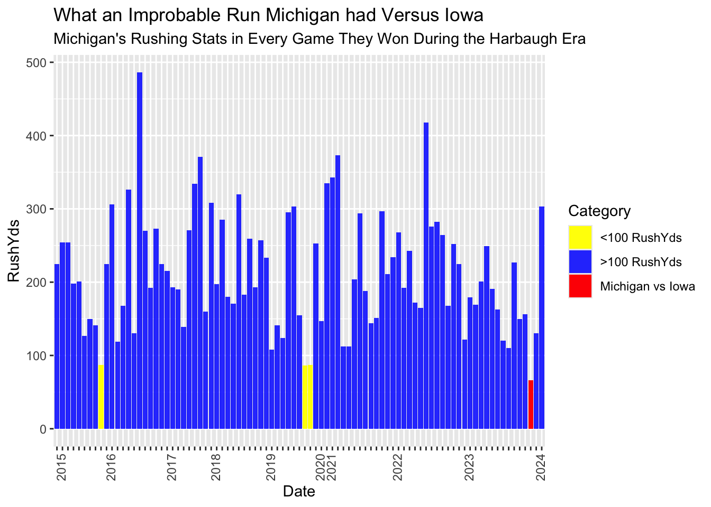

Defense Wins Championships, but Offense Loses Them, Too: Big Ten Football Championship 2023
football
Iowa
Michigan
Author
Sam Benning
Published
October 22, 2024
On paper, the Iowa Hawkeyes had quite a solid game against Michigan in the 2023 Big Championship Football game. Thanks to some stats, we found that the stats lied to us. Let’s check out some college football data.
Code
library(tidyverse)
── Attaching core tidyverse packages ──────────────────────── tidyverse 2.0.0 ──
✔ dplyr 1.1.4 ✔ readr 2.1.5
✔ forcats 1.0.0 ✔ stringr 1.5.1
✔ ggplot2 3.5.1 ✔ tibble 3.2.1
✔ lubridate 1.9.3 ✔ tidyr 1.3.1
✔ purrr 1.0.2
── Conflicts ────────────────────────────────────────── tidyverse_conflicts() ──
✖ dplyr::filter() masks stats::filter()
✖ dplyr::lag() masks stats::lag()
ℹ Use the conflicted package (<http://conflicted.r-lib.org/>) to force all conflicts to become errors
The Michigan Wolverines came into the 2023 Big Ten Championship game looking to set themselves up for a potential CFP title. They had an elite backfield, averaging nearly 170 rushing YPG, which helped lead the charge to their undefeated record. However, they first had to get through the Iowa Hawkeyes, known for a suffocating defense that was bound to cause hell for one of the top teams in the country. A main focus of Iowa’s defense was surely to hinder the Michigan run game. By the end of the championsihp, Iowa did exactly what it set out to do. They did an outstanding job of stopping the run, holding the Wolverines to a total of 66 rushing yards.
Iowa lost 26-0.
What happened? Surely Michigan passed the crap out of the ball.
Code
michigan_pass_yds_iowa <- winlosslogs |>filter(TeamFull =="Michigan Wolverines", Date =="2023-12-02") |>select(PassingYds)michigan_pass_yds_iowa
PassingYds
1 147
Nope. 147 passing yards.
How likely was this to even happen? We can check out every Michigan win and how well they ran the ball.
Code
library(zoo)
Attaching package: 'zoo'
The following objects are masked from 'package:base':
as.Date, as.Date.numeric
Code
michigan_wins <- winlosslogs |>group_by(Date) |>filter(TeamFull =="Michigan Wolverines", wins ==1, Season >=2015, Season <=2023) |>summarize(RushYds =sum(RushingYds))michigan_low_rush_wins <- michigan_wins |>filter(RushYds <100)michigan_vs_iowa <- michigan_wins |>filter(Date ==as.Date("2023-12-02"))# Add a Season column (Thanks ChatGPT) - helps with the x labelsmichigan_wins$Season <-format(as.Date(michigan_wins$Date), "%Y")michigan_low_rush_wins$Season <-format(as.Date(michigan_low_rush_wins$Date), "%Y")michigan_vs_iowa$Season <-format(as.Date(michigan_vs_iowa$Date), "%Y")# Convert Date to a factor to remove gaps (Thanks ChatGPT)michigan_wins$Date <-as.factor(as.Date(michigan_wins$Date))michigan_low_rush_wins$Date <-as.factor(as.Date(michigan_low_rush_wins$Date))michigan_vs_iowa$Date <-as.factor(as.Date(michigan_vs_iowa$Date))#plot the stuffggplot() +geom_bar(data = michigan_wins, aes(x = Date, y = RushYds, fill =">100 RushYds"), stat ="identity", alpha =0.85) +geom_bar(data = michigan_low_rush_wins, aes(x = Date, y = RushYds, fill ="<100 RushYds"), stat ="identity") +geom_bar(data = michigan_vs_iowa, aes(x = Date, y = RushYds, fill ="Michigan vs Iowa"), stat ="identity") +scale_fill_manual(values =c(">100 RushYds"="blue", "<100 RushYds"="yellow", "Michigan vs Iowa"="red")) +# Define colors for the barsscale_x_discrete(labels =function(x) ifelse(duplicated(michigan_wins$Season), "", michigan_wins$Season)) +# Custom x-axis labels by seasontheme(axis.text.x =element_text(angle =90, hjust =1)) +labs(fill ="Category") +# Labels for the legend labs(title="What an Improbable Run Michigan had Versus Iowa", subtitle ="Michigan's Rushing Stats in Every Game They Won During the Harbaugh Era")

As we see, Michigan hardly ever wins when they run for over 100 yards. Prior to this game during the Harbaugh era (2015-2023), it only happened three times. Iowa clearly had the right scheme in mind, but it seems like they just had an unlucky day.
When we look deeper into the game, Iowa actually allowed two rushing touchdowns to Michigan’s star HB Blake Corum. A team doesn’t score 26 points by accident, especially to one of the best defenses in the country. Iowa’s halt of Michigan’s rushing yards is clearly not congruent with giving up as many points as they did. A reason for this? Not their defense. Iowa’s offense turned the ball over three times - all of them fumbles. These set up short and easy drives for Michigan to essentially walk into the endzone. On Michigan’s two touchdown-scoring drives, they ran a combined 3 plays for 11 yards. Yes, you read that right. They started with the ball inside the Iowa 10 yard line twice after recovering fumbles (source https://www.espn.com/college-football/playbyplay/_/gameId/401539480). This helps explain Michigan’s “poor” offensive performance. In fact, they were pretty efficient in scoring while they had the time to. So, defense may win championships, but even a decent looking defense might come from better-than-mediocre offense. The statement only holds under certain conditions. Sorry Iowa.